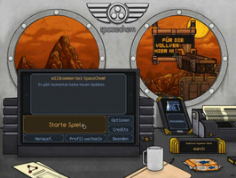
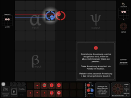

SpaceChem
Dieser Artikel wurde für die folgenden Ubuntu-Versionen getestet:
Ubuntu 14.04 Trusty Tahr
Zum Verständnis dieses Artikels sind folgende Seiten hilfreich:
SpaceChem  von Zachtronics Industries ist ein Puzzle-Spiel. Man schlüpft in die Rolle eines Reaktoringenieurs bei dem Unternehmen SpaceChem. Dieses ist führend im Bereich der chemischen Synthese in den Grenzlandkolonien. Aus den im Level vorgegebenen Elementen, Atomen und Molekülen gilt es, die immer komplexeren Baupläne der Anlage umzusetzen, um das Ziel zu erreichen...
von Zachtronics Industries ist ein Puzzle-Spiel. Man schlüpft in die Rolle eines Reaktoringenieurs bei dem Unternehmen SpaceChem. Dieses ist führend im Bereich der chemischen Synthese in den Grenzlandkolonien. Aus den im Level vorgegebenen Elementen, Atomen und Molekülen gilt es, die immer komplexeren Baupläne der Anlage umzusetzen, um das Ziel zu erreichen...
|  |  |
| Hauptmenü | Tutorial |
Installation¶
Hinweis:
Installiert man das Spiel über ein DEB-Paket unter einem neueren Ubuntu (neuer als 12.04), so gibt es ein Problem mit einer Abhängigkeit. Die Lösung ist im Abschnitt Problembehebung beschrieben.
Desura¶
Das Spiel kann über die Internetseite oder den Client zur Spieleliste hinzugefügt und gestartet werden [4].
Entwicklerseite¶
Nachdem man das Spiel auf der Herstellerseite erworben hat, erhält man eine E-Mail mit dem Downloadlink. Das Spiel hier herunterladen und die Datei SpaceChem-XXXX.tar.gz entpacken [1]. Anschließend das Paket SpaceChem-i386.deb installieren [2].
The Humble Android Bundle #3¶
Das zur Rechnerarchitektur passende .deb-Paket aus der Aktion The Humble Android Bundle #3 herunterladen und installieren [2].
Das Spiel ist unter "Anwendungen -> Spiele -> SpaceChem" zu finden.
Einstellungen¶
Unter "Options" kann die Spielsprache, die Auflösung sowie Einstellungen zur Musik und dem Sound vorgenommen werden. Außerdem ist es möglich die Übermittlung von Crash Reports und der Punkte aus der Highscore-Tabelle zu deaktivieren.
Demo¶
Eine Demoversion kann von Zachtronics Industries  heruntergeladen und wie die Vollversion installiert werden.
heruntergeladen und wie die Vollversion installiert werden.

Infobox¶
| SpaceChem | |
| Originaltitel: | SpaceChem |
| Genre: | Puzzle |
| Sprache: |      |
| Veröffentlichung: | 2011 |
| Publisher: | Zachtronics Industries |
| minimale Systemvoraussetzungen: | - |
| Medien: | Download |
| Strichcode / EAN / GTIN: | - |
| Läuft mit: | nativ |
Problembehebung¶
Fehlende Abhängigkeit bei Installation¶
Ab Ubuntu 14.04 schlägt die Installation des DEB-Paketes fehl, weil die Abhängigkeit libmono-wcf3.0-cil fehlt. Tatsächlich wurde das Paket aber nur in libmono-wcf3.0a-cil umbenannt. Um das Spiel zu installieren, installiert man zuerst das benötigte Paket.
libmono-wcf3.0a-cil
 mit apturl
mit apturl
Paketliste zum Kopieren:
sudo apt-get install libmono-wcf3.0a-cil
sudo aptitude install libmono-wcf3.0a-cil
Danach entfernt man die Abhängigkeit aus dem DEB-Paket:
Das DEB-Paket entpacken. [1]
Die Datei control im Ordner DEBIAN in einem Texteditor öffnen. [5]
In der Zeile, die mit Depends: beginnt, libmono-wcf3.0-cil entfernen und Speichern.
Das Paket mit dem folgenden Befehl neu packen. [3]
dpkg -b /Pfad/zum/entpackten/Paket
Das neue Paket sollte sich jetzt installieren lassen. Der Hinweis auf die vermeintlich schlechte Qualität des Paketes kann ignoriert werden.
- Erstellt mit Inyoka
-
 2004 – 2017 ubuntuusers.de • Einige Rechte vorbehalten
2004 – 2017 ubuntuusers.de • Einige Rechte vorbehalten
Lizenz • Kontakt • Datenschutz • Impressum • Serverstatus -
Serverhousing gespendet von